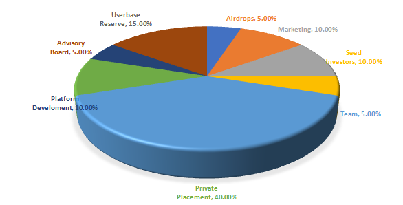

FIBONACCI NETWORK TOKEN - WHITE PAPER
1. DEFINITION(S)
Founder of the social networking platform which will be known as Fiyou. ( or decided by community polling )
A utility cryptographic decentralised token issued by the Fibonacci Network based on the Binance Smart Chain (BEP20 token) for the purpose of social gaming and digital content consumption.
A highly interactive social media platform with diverse communities where anyone can be a creator and share digital content with the community and can get FIBO as a reward from viewers. Fiyou will also be a platform for online-social games where you will also be able to have voice and video chat with other players while playing. Here in after will be called as "platform".
This paper in its entirety
The person who is logging in on website/app to access the services of Fiyou will be known as a user.
The user who is uploading any sort of image or video on the platform to engage with other users on the platform will be known as a content creator.
The user who is viewing or interacting with any content available on Fiyou will be known as a viewer.
The user who is engaging in any online-social game will be known as a player.
2. Platform & Ecosystem
Fibonacci Network Token, powering Fiyou, will give digital content creators and viewers the ability to interact in a new and innovative way. We anticipate that by 2025 image & video sharing apps, discussion apps, and online social-gaming landscape will not be dominated by apps that have the biggest pool of users, content creators and active discussion forums, but by those universal apps which can successfully provide a one-stop solution for every need of the users.
Fiyou, will be an efficient universal social-media platform that will be capable of providing users with the luxury of having a single gateway to the world of social media with the help of blockchain technology. Our token FIBO will be the rocket fuel for powering the Fiyou platform, with FIBO viewers can reward the content creators and this will provide content creators with a much advanced andbetter way to monetize their audience. Also, in online-social games, FIBO will create a healthy competitive atmosphere where the winner will get FIBO in the reward which he will be able to use anywhere on the platform. Moreover, in phase 4 of our project we will also be having an FIBO exchange marketplace on the platform where any user can swap FIBO with BTC, ETH, BNB, and USDT.
3. VISION
To provide billions of social media users a platform where they can use a currency to have a say and active participation in the content which they are consuming
To provide a direct monetization platform for content creators where they can engage with the maximum audience at one place and can get duly rewarded for their hard work.
To change the way how online-social games are played by introducing social clubs where you can voice and video chat with other players during the game and will get rewarded with FIBO for winning.
4. TOKENOMICS

5. TECHNOLOGY
Binance Smart Chain is an innovative solution to bring programmability and interoperability to Binance Chain. Binance Smart Chain relies on a system of 21 validators with Proof of Staked Authority (PoSA) consensus that can support short block time and lower fees. The most bonded validator candidates of staking will become validators and produce blocks. The double-sign detection and other slashing logic guarantee security, stability, and chain finality.
Binance Smart Chain (BSC) is best described as a blockchain that runs in parallel to the Binance Chain. Unlike Binance Chain, BSC boasts smart contract functionality and compatibility with the Ethereum Virtual Machine (EVM). The design goal here was to leave the high throughput of Binance Chain intact while introducing smart contracts into its ecosystem. Because BSC is EVM-compatible, it launched with support for the rich universe of Ethereum tools and DApps.
-academy.binance.com
BEP-20 is a token standard on Binance Smart Chain that extends ERC-20, the most common Ethereum token standard. You can think of it as a blueprint for tokens that defines how they can be spent, who can spend them, and other rules for their usage. Due to its similarity to Binance Chain's BEP-2 and Ethereum's ERC-20, it's compatible with both. BEP-20 was conceived as a technical specification for Binance Smart Chain, with the goal of providing a flexible format for developers to launch a range of different tokens. These could represent anything from shares in a business to dollars stored in a bank vault (i.e., a stablecoin). Of course, one could equally create a native asset as a BEP-20 token, or even peg tokens from other blockchains to make them usable on Binance Smart Chain. This is what's done with "Peggy" coins, which are essentially BEP-20 versions of other crypto assets (such as LINK or XRP). Like BEP-2 tokens on Binance Chain, BEP-20 token transfers are fuelled with BNB. This provides an incentive for validators to include the transactions in the blockchain, as they'll collect the BNB as a fee for their troubles. You may know that Binance Smart Chain was envisioned as something of an extension to Binance Chain. With dual chain architecture, both chains are complementary - Binance Smart Chain caters to decentralized applications without congesting the original chain, which is optimized for ultra-fast trading.
-academy.binance.com
- We, at the Fibonacci Network, have a deep faith in the spirit of open-source development, and in past have been contributing actively to the development of open-source communities, so BSC's idea resonates with our thinking.
- This is one of the fastest exploding ecosystems which makes it a better choice for the development of our platform.
- BSC provides lower gas fees in comparison to Ethereum. Lower gas fees can promote mass holding and adoption of FIBO. In comparison to Ethereum, gas fees on Binance Smart Chain (BSC) isalmost 20 times lower.
- Binance Smart Chain or BSC utilizes Proof of Staked Authority (PoSA) consensus. The algorithm uses 21 validators and is capable of producing a new block every 3 seconds which makes it a suitable choice for mass adoption.
- BSC has a track record that speaks for itself as many leading tokens are working on it. This makes it a smart choice for us.
6. PROBLEMS
Viewers can only watch. They can't demand the custom content they want from content creators.
The current social networking, image and video sharing environment don't offer much choice to viewers to decide the content they want to see rather they have to be dependent on what content the creator serves them. This is a passive endeavour as the viewers have no direct influence over their favourite content creators. Ironically, the current online-social gaming arena lacks an element of social connection among the players as they usually don't get the option to keep interacting with each other over voice or video while playing.
This means that in the present state of social media there is no system to make sure that a viewer can compulsorily get content-on-demand from her favourite creator. Moreover, there is also no prevalent mechanism in place to make sure that content creator where content creator can monetize content-on-demand from viewers.
7. SOLUTION
A platform where viewers can have a direct say in regard to the content they want from their favourite content creators, connect and fund the creators for their content-on-demand
The Fiyou, powered by the Fibonacci Network Token, a universal social media platform that empowers viewers to take a meaningful, active hand in guiding various decision making and funding the content creators for the content-on-demand. This is made possible via the novel application of a scalable, blockchain-based Fibonacci Network Token purchasing and holding.
This Fibonacci Network Token-fueled blockchain solution turns content consumption on our social media platform much more interactive, innovative, and viewer controlled. Every user's say will directly affect the content creation on our platform and it will make this a truly decentralized social media platform where everyone will be an influencer in her capacity. Fibonacci Network Token will also provide a solution in regard to online-social games where the winner will get token in reward for winning which she can use anywhere on the platform or can swap with the above-mentioned pairs on our FIBO exchange marketplace. To ensure a truly social and democratic interaction while playing games the platform will minimum speaking time to every player and the additional can be bought with the help of FIBO.
8. LEGAL
Risk Warning: Investing in digital financial assets involves a high degree of risk and volatility and is not suitable for all investors; do not risk more money than you can afford to lose. Please consult an independent professional financial or legal advisor to make sure the product is right for you.
Disclaimer: This document contains text, data, graphics, photographs, illustrations and information ("Information") connected with Fibonacci Network Group and/or other entities part of the Fibonacci Network Group (hereinafter referred to as Fibonacci). Fibonacci attempts to ensure Information is accurate, however, Information is provided "AS IS" and on an "AS AVAILABLE" basis and may not be accurate or up to date. The publication of this document does not represent any solicitation by Fibonacci of buying the token "Fibonacci Network Token" and is not to be considered as a recommendation by Fibonacci as to the suitability of any investment, if any, herein described. No action should be taken or omitted to be taken in reliance upon the Information in this document. Fibonacci accepts no liability for the results of any action taken on the basis of the Information.